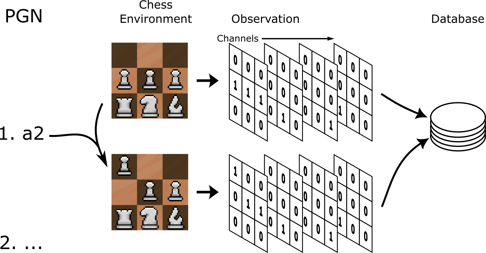

Chess Bot¶
Play A Bot¶
App
Select a bot to play. Learn more about their construction below.
Data Engineering¶
The goal of the database supporting our chess bot is to have a large number of examples from strong players. Further, it is important that the data is easily understood by a machine. Then it is adequate to obtain millions of chess board positions reached by high Elo players where the outcome of the game is known. The board positions can then effectively be represented as a series of yes of no statements, mostly regarding each piece and its position within the 8x8 chess board.
Data Gathering¶
To achieve so many board positions from high Elo players, Computer Chess Rating Lists records millions of games from top chess engines in Portable Game Notation (PGN) format. These are freely available for download in a compressed format.
Data Preprocessing¶
Getting the board positions necessary requires recreating the games played per the PGN files. PettingZoo, provided by Farama Foundation, includes a chess environment. This environment provides observations of the state of the chess board. The specifics can be found here. In short, the observation is a set of board representations, also referred to as channels. Each representation is an 8x8 matrix of zeros and ones, ‘no’s and ‘yes’s, with respect to a specific piece of information, like “are there white pawns in this position”. There are a few pieces of information worth clarifying from the PettingZoo documentation so I will include the channel specifications here:
PettingZoo Chess Observation Channels
Channel |
Information |
Specification |
|---|---|---|
0 |
Can white castle queenside? |
Non-positional, all ones or all zeros |
1 |
Can white castle kingside? |
Non-positional, all ones or all zeros |
2 |
Can black castle queenside? |
Non-positional, all ones or all zeros |
3 |
Can black castle kingside? |
Non-positional, all ones or all zeros |
4 |
Is white or black observing? |
Non-positional, all ones(black) or all zeros(white) |
5 |
50 move rule count. |
One in position of 8x8 matrix flattened to 1 dimension |
6 |
All ones. |
|
7 |
Where are the observer’s pawns? |
|
8 |
Where are the observer’s knights? |
|
9 |
Where are the observer’s bishops? |
|
10 |
Where are the observer’s rooks? |
|
11 |
Where are the observer’s queens? |
|
12 |
Where is the observer’s king? |
|
13 |
Where are the opponent’s pawns? |
|
14 |
Where are the opponent’s knights? |
|
15 |
Where are the opponent’s bishops? |
|
16 |
Where are the opponent’s rooks? |
|
17 |
Where are the opponent’s queens? |
|
18 |
Where is the opponent’s king? |
|
19 |
Has this position been seen before? |
Non-positional, all ones or all zeros |
20-110 |
Repeats of 7-19 for the 7 most recent positions. |
From most recent to least. |
To create the database then is a matter of submitting the moves described in the PGN file to the environment, saving observations with appropriate labels all the while.
{kind=link}
Further, the database is refined to concentrate on more relevant datapoints. On advice provided by the DeepChess 1 paper, this includes avoiding positions very early in the game (first 5 moves), positions immediately after the capture of a piece, and games which ended in a draw.
The Stats¶
Measure |
Value |
|---|---|
Number of games processed |
300,000 |
Size of games processed |
0.3 GB |
Number of observations |
5,875,812 |
Size of labels |
2.0 GB |
Size of observations |
69.0 GB |
The Tricky Bit¶
The Tricky Bit
The size of the database is considerable. This makes the games difficult to parse and the observation data difficult to fit onto RAM all at once.
To address the difficulty of parsing over 1M games (necessary even when limiting the database to 300,000 games to avoid draws), I created a custom iterator which leverages python’s Pandas library. This iterator combined with a multiprocess mapping ensures the database is created quickly with efficient use of compute power and memory. Each process will save the observations to the hard drive while accumulating observation label information in RAM up to some specified limit (14,000 games in my case). The label information is then also saved to the hard drive with a master file keeping track of which label files contain the metadata for which observations (e.g. label_file_1 contains metadata for the first 200,000 observations). This procedure allows the database to easily scale, dependent on the available games supplied by PGN file, the available RAM, and the available hard drive space.
This also addresses the second issue of fitting all observation data into RAM at once. The label files which contain the metadata for the observations, including their location on the hard drive, can then be loaded one at a time and have all their observations processed before moving on to the next set of observations represented by the next label file.
This is complicated somewhat by the idea that the GPU used to train our model will be much faster at processing than the CPU loading data from the hard drive. This means it is prudent to enable multiprocessing and batching when loading the data to be trained on. To ensure RAM usage is stable:
Indices must be served in order. So if selected randomly, as with a data split, those selected must be sorted.
Two label files should be in RAM, where one fails to complete a batch, the next can take over.
Once the end of a label file is reached, a lock should be used to pause all but one process which handles opening the next label file (and closing the oldest one).
Since Pytorch’s dataloader is being used, special considerations must be made in how data labels are stored, avoiding lists and dicts, described in detail in my repo documentation.
Machine Learning Engineering¶
Now with the ability to create a database full of observations of some of the best players (bots) in the world, we have a strong basis to support the creation of our own chess bot. There are many machine learning approaches to achieve a viable chess bot, so multiple will be explored.
The first will be an application of supervised learning. This is a straight-forward use of the generated dataset, where the observations serve as input to our model which then attempts to approximate labels also provided by the database. The approximation attempts are graded, measuring their error, and the model’s parameters are adjusted to improve.
Supervised Learning¶
The goal is to create a model capable of classifying a given position, or chess board observation, as either winning or losing. More specifically, when comparing two observations it should be able to deem which is winning and which is losing. Then, incorporate this scheme as a heuristic evaluation for a classic minimax game tree search. This effort is lead by the DeepChess 1 research paper.
Autoencoding- To start, a randomly initialized model, of any shape, will know nothing about chess. It will know nothing about strategy, have no expectation of how a game might play out, and not understand the interdependence of pieces on the board. This will make classifying one board state as better than another quite difficult. So, first a feature extractor, something that does understand the intricacies of the game, will be useful to inform our classifier.
Autoencoding is one way to create a competent feature extractor, without relying on a lot of manual feature engineering. In short, the original observation serves as input and the objective label. In between, a model which allows for less and less information to be passed after each layer, and its mirror image. The model then encodes the observation in a way meaningful enough that the mirror image can decode and rebuild the original observation. If the observation is rebuilt well, the features captured must be useful and relevant representations of the game.
To help train, we initially avoid forcing the model to reconstitute the observation from the fully condensed form. Instead, for each batch, we take a slice of the model to first train the larger layers, closer to the size of the observation. Then we train on the batch again, including the next layer of the model, and so on until the entire model is included. This reinforces the idea of gradually more abstract concepts being captured by the feature extractor as the observation is processed deeper within the model.
{kind=link}
Autoencoding training process per batch.¶
Classification-
MiniMax Search-
Reinforcement Learning¶
Generative Model¶
References:¶
David, O., Netanyahu, N., & Wolf, L. (2016). DeepChess: End-to-End Deep Neural Network for Automatic Learning in Chess. Springer International Publishing.